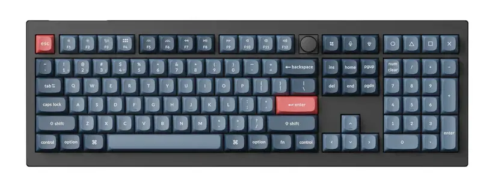

After 4 full years with my trusty Ducky One 2 Tuxedo, I finally bought a new keyboard. There is nothing wrong with my old keyboard, it is functioning just as good as the day I bought it. I just wanted an upgrade.
What did I choose?
My absolute minimum requirement was a proper full-size keyboard. None of those squeezing the arrow keys into the main section or moving the "Insert → Page Down" section around. So, after looking at the limited options available in the full-size mechanical keyboard segment, I decided to go with the Keychron V6 Max (I went with the red switches).
Why did I choose it?
It was literally the only mechanical keyboard available in India which ticked all the above boxes. And it also came with these upgrades over my existing keyboard:
- Triple connectivity options
- Bluetooth
- Wired
- 2.4 GHz dongle-based
- QMK/VIA programmable
- Configurable backlight
- A rotary encoder knob
- Hot swappable switches
How has it been?
I am sometimes hitting the wrong keys because of the slightly changed keycap profile, but otherwise the experience has been nice. After three weeks of use, I am back at around the same efficiency I had with my previous keyboard.
I haven't yet made any customisations to the keymap, but I plan to change some small things around this weekend. I'll report back next weekend with how that works out over the week.